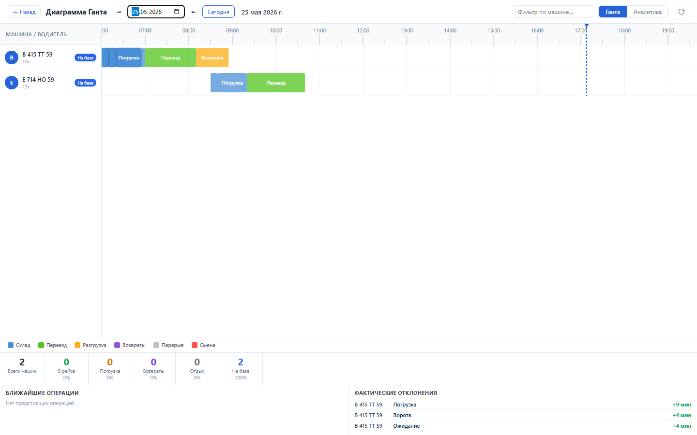
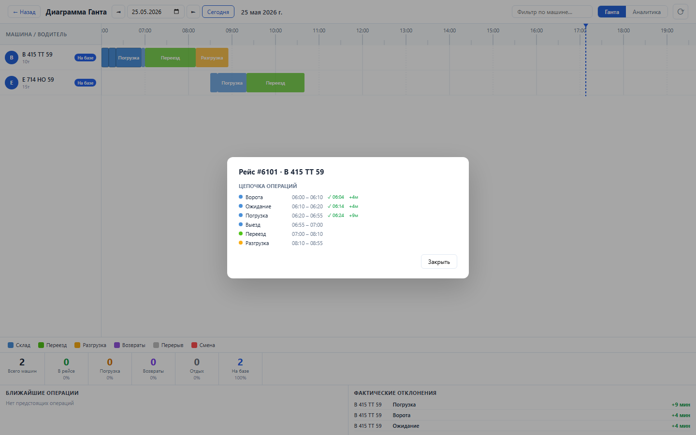
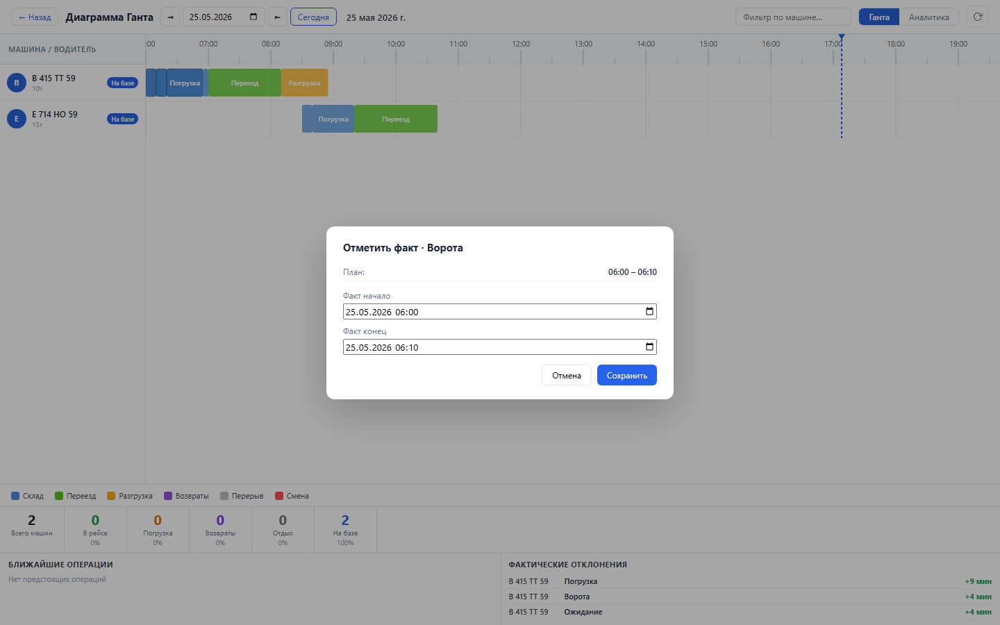
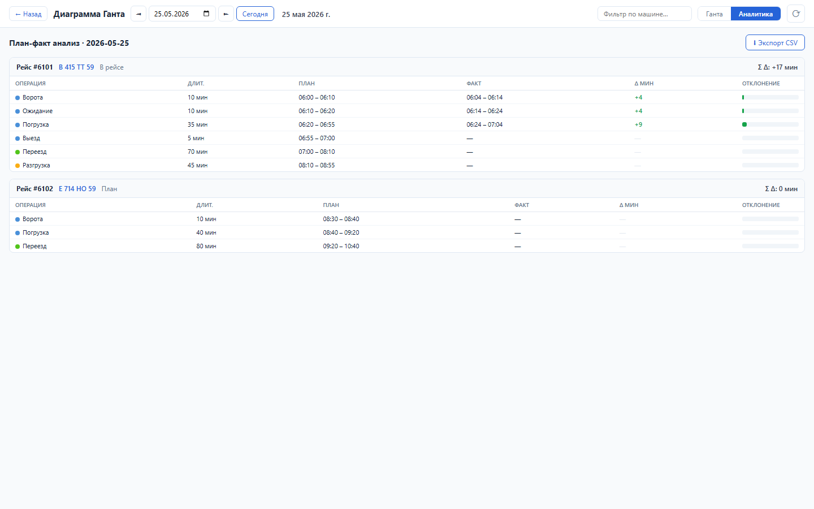

Зачем этот блок
Sprint 11 переводит рейс из одной строки диспетчера в управляемую цепочку операций. Диспетчер видит загрузку, выезд, движение, разгрузку и возвраты на временной шкале, фиксирует факт и сразу видит отклонения.
Вход
Рейс, дата отгрузки, машина, нормативы операций и плановое время.
Рейс, дата отгрузки, машина, нормативы операций и плановое время.
Процесс
Построить операции, контролировать Гант, открыть карточку рейса, отметить факт.
Построить операции, контролировать Гант, открыть карточку рейса, отметить факт.
Результат
Операционный таймлайн, факт выполнения, отклонения и план-факт отчет.
Операционный таймлайн, факт выполнения, отклонения и план-факт отчет.
Структура данных
| Объект | Поля | Назначение |
|---|---|---|
| Операция рейса | op_id, tt_id, operation_code, ord, duration_min | Шаг жизненного цикла рейса. |
| План | plan_start, plan_end | Расчетная цепочка по нормативам. |
| Факт | fact_start, fact_end, delta_min | Реальное выполнение и отклонение от плана. |
| Гант машины | vehicle_id, vehicle_num, vehicle_type, operations | Группировка операций по машинам на день. |
Как работать




Бизнес-процессы
- Планирование операций: для рейса строится последовательная цепочка нормативных операций без разрывов времени.
- Оперативный контроль: диспетчер смотрит машины на временной шкале и видит текущие/будущие операции.
- Разбор рейса: карточка рейса показывает всю цепочку, план, факт и отклонения по шагам.
- Фиксация факта: диспетчер или водительский интерфейс записывает фактические времена операции.
- План-факт управление: отклонения агрегируются по рейсу и используются для контроля качества исполнения.
Результат проверки
Sprint 11 закрыт функционально: backend tests 20 passed, UI smoke passed, load NFR passed. Проверены планирование операций, чтение цепочки, фиксация факта, Гант по машинам и план-факт экран.